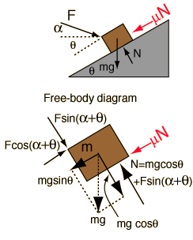

Though describable by the motion equations and the standard model of friction, this example requires care because under different conditions the mass can move up or down the incline, or it can be just held in place by the applied force. In the diagrams above, it is assumed that the mass is moving up the incline, so that the frictional resistance acts downward to oppose it. If the mass is moving downward, then the frictional resistance force must be reversed in direction. |
Application of Newton's second law to mass on incline.
|